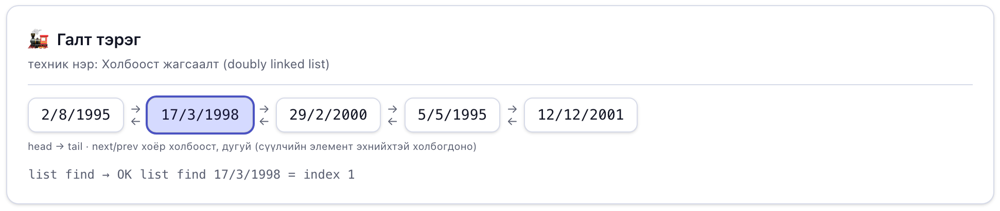
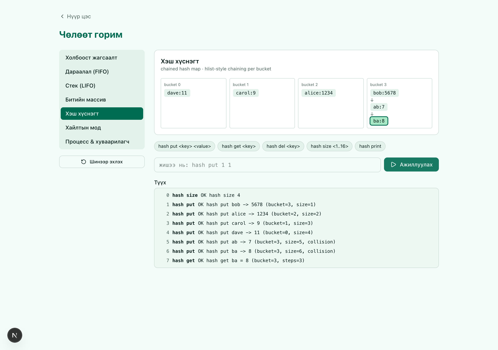
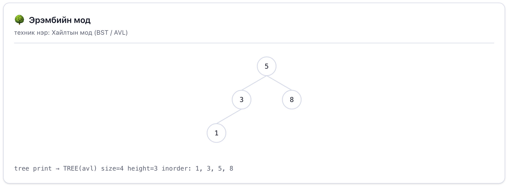
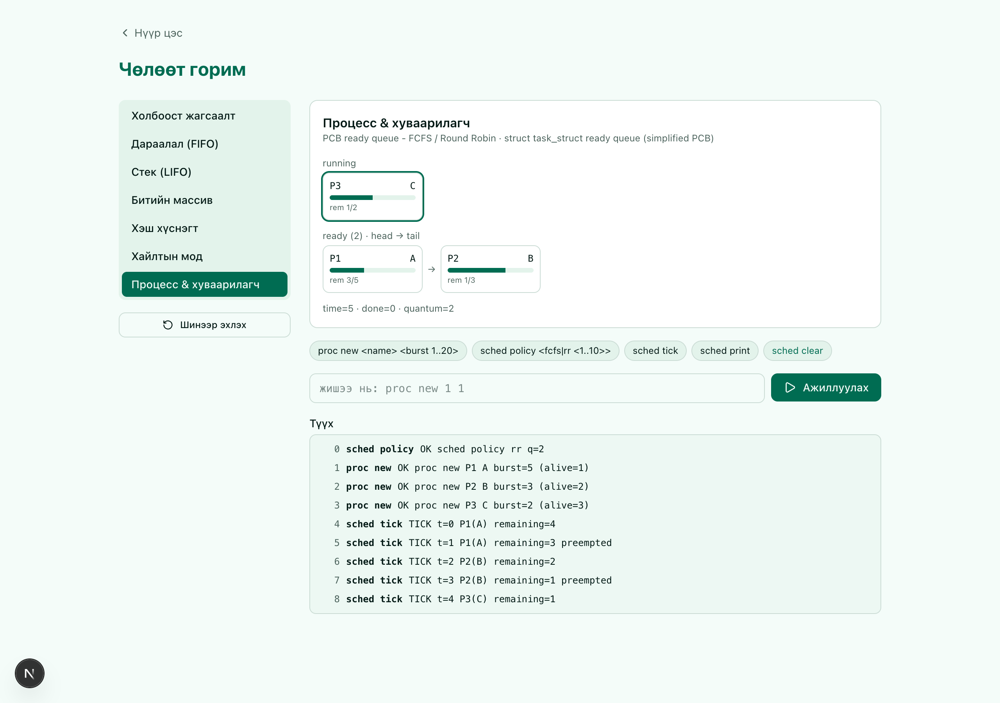
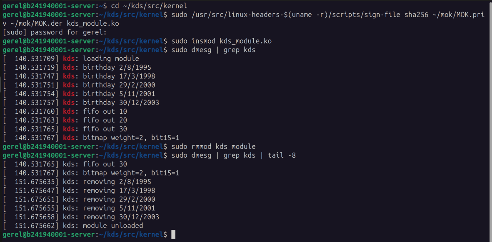

| Хичээл заасан багш: | Г. Ганбат (F.CS10) |
| Гүйцэтгэсэн баг: | Н. Ням-Од (B222270805) |
| А. Гэрэл (B241940001) | |
| А. Номин (B242270088) | |
| Э. Мягмаршагай (B241910001) | |
| О. Хүслэн (B241910020) | |
| Ч. Түмэншагай (B160910830) |
Асуудал. Kernel процесс, нөөц, файлуудаа холбоост жагсаалт, дараалал, стек, bitmap, хэш хүснэгт, мод зэрэг өгөгдлийн бүтцээр удирддаг. Эдгээрт элемент нэмэх, устгах, хайх үед бүтэц хэрхэн өөрчлөгддөгийг нүдээр харуулж, хэрэгжилтийг нь нотлох шаардлагатай.
Шийдэл. Linux-ийн list_head-ийн next/prev семантикийг C-ээр дахин бичиж, долоон бүтэц (жагсаалт, queue, stack, bitmap, hash map, BST/AVL мод, PCB бүхий ready queue ба FCFS/Round Robin scheduler) бүхий командын интерпретатор (kds) бүтээв. Энэ C программд --json горим нэмж, команд бүрийн дараах бүтцийн төлөвийг JSON хэлбэрээр гаргадаг болгов. Веб дээр ажилладаг хэрэглэгчийн интерфэйс (Next.js, web/ хавтас) нь тэр JSON-ыг C программаас шууд авч, өөрөө юу ч тооцоолохгүйгээр зурж харуулдаг — өөрөөр хэлбэл, нэг л «бодол» (логик) байдаг: C. Веб нь түүнийг зөвхөн дэлгэцэнд үзүүлнэ. Сурах бичгийн 3-р бүлгийн Programming Project-ийн дагуу kernel module нь struct color жагсаалт болон start параметртэй Collatz дарааллын жагсаалтыг kernel орчинд үүсгэж, устгана.
Туршилт. 6 жишээ скрипт ба 5000×8 командын stress тест ASan/UBSan-тай давсан. Текст гаралт ба --json гаралтыг нэг C программаас зэрэг гаргаж, 40 000 санамсаргүй командад (8 seed × 5000, тэр дотор AVL) мөр мөрөөрөө ижил мессеж өгснийг баталгаажуулсан. AVL-ийн өндрийн хязгаарыг 30 санамсаргүй гүйлтээр шалгасан. GitHub Actions дээр C программ ба веб аппыг автоматаар build, тест хийдэг CI тохируулсан. Kernel module-ийн өмнөх хувилбар Ubuntu 24.04 (kernel 6.11.0-17) дээр insmod/rmmod хийгдсэн.
Гол үр дүн. Оролт, огноо, хязгаарыг шалгадаг, хэрэглэгч өөр өгөгдлөөр дахин туршиж болох, терминал (CLI) ба веб хуудас хоёулаа яг нэг C программаас гарсан мэдээллийг харуулдаг хэрэгсэл бүтээгдсэн.
Үйлдлийн системийн kernel нь процессын жагсаалт, ready queue, bitmap (нөөц чөлөөтэй эсэх), хэш хүснэгт (хурдан хайлт), модон бүтэц (scheduler, санах ой) зэргийг өгөгдлийн бүтцээр удирддаг. Төслийн зорилго нь эдгээрийн үндсэн үйлдлийг хэрэгжүүлж, үйлдэл бүрийн дараах төлөвийг нүдэнд харагдахуйц болгох явдал юм.
Ач холбогдол. list_head бол Linux kernel-ийн хамгийн их хэрэглэгддэг бүтэц бөгөөд task_struct (PCB), ready queue зэрэг нь түүн дээр суурилдаг. Үүнийг ойлгох нь 3-р бүлгийн «Processes» сэдвийн суурь болно.
Хамрах хүрээ. Хэрэглэгчийн орчны загвар (C, CLI), түүн дээр суурилсан веб хуудас (Next.js), мөн нэг kernel module. Бодит Linux scheduler-т холбогдохгүй.
Хуваарилалт: код 4, «Kernel Data Structures», үзүүлэлт «Kernel structure graph», бүлэг 3 – Processes. Хүрэх үр дүн: «Сурах бичигт заасан kernel data structure-ийн хэрэглээг хэрэгжүүлж, элемент нэмэх, устгах, хайх үйлдлийн дараах бүтцийг графаар харуулна.»
Operating System Concepts-ийн 3-р бүлгийн Programming Project «Kernel Data Structures» нь 1.9-д тайлбарласан бүтцүүд дээр тулгуурласан хоёр хэсэгтэй:
struct color {red, blue, green; struct list_head list;} төрлийн элементүүдийг kernel module дотор жагсаалтад нэмж, list_for_each_entry-ээр гүйлгэн хэвлэх, module-ийг буулгахад list_for_each_entry_safe-ээр устгаж санах ойг чөлөөлөх.start параметр дамжуулж (module_param), Collatz дарааллыг (тэгш бол n/2, сондгой бол 3n+1, 1 хүртэл) холбоост жагсаалтад хадгалан хэвлэх, буулгахад устгах.Доорх хүснэгт нь шаардлага бүрийг хэрэгжилт ба баталгаажуулалттай холбосон.
| Шаардлага | Хэрэгжилт | Нэмэх / устгах / хайх | Баталгаа |
|---|---|---|---|
| Ch.3 Part I: struct color жагсаалт | kds_module.c, color_list | list_add_tail / list_del / list_for_each_entry | run_module_test.sh, dmesg |
Ch.3 Part II: Collatz, start параметр | kds_module.c, module_param(start), 1..1 000 000 | list_add_tail / list_del | start=25, 15, 0 (татгалзана) |
| 1.9.1 Холбоост жагсаалт (list_head) | Давхар холбоост дугуй жагсаалт (struct birthday) | add_head, add_tail / del / find | textbook, search, веб «Тоглох» |
| 1.9.1 Stack (LIFO) | list_head, дээд талаас нэмж авна | push / pop / find | all_structures, search |
| 1.9.1 Queue (FIFO) | list_head, төгсгөлд нэмж эхнээс авна | push / pop / find | all_structures, search |
| 1.9.2 Binary search tree | Энгийн BST (хамгийн муу O(n)) | insert / delete / find | search: 1–5 → өндөр 5 |
| 1.9.2 Тэнцвэржсэн мод (O(lg n)) | AVL (tree mode avl) | insert / delete / find | search, avl_check: 1–7 → өндөр 3 |
| 1.9.3 Хэш функц ба hash map | Кодын нийлбэр mod n; collision-д bucket доторх list_head | put / del / get | search: bob, ab, ba нэг bucket |
| 1.9.4 Bitmap | n = 1..128 бит | set / clear / test | all_structures, errors |
| «Processes» холбоос | PCB + list_head ready queue, FCFS, Round Robin | proc new / дуусах / sched print | scheduler, scheduler_full |
Харуулах шаардлага: веб хуудас нь бүтэц бүрийн нэмэх, устгах, хайх үйлдлийн дараах төлөвийг граф хэлбэрээр шууд зурдаг (6-р хэсэг).
list_head нь intrusive, давхар холбоост, дугуй жагсаалт юм. Node нь өгөгдлийн struct дотор list_head талбар агуулж, container_of макро нь талбарын хаягаас эзэн struct-ийг сэргээнэ. Нэмэх, устгах үйлдэл O(1), хайх нь O(n).
Queue (FIFO) нь tail-д нэмж head-ээс авдаг. Kernel-ийн ready queue ийм зарчмаар ажилладаг. Stack (LIFO) нь head-д нэмж head-ээс авдаг.
Bitmap-д 1 бит нь 1 нөөцийг илэрхийлнэ. set/clear/test нь O(1) бөгөөд Boolean массиваас 8 дахин бага зай эзэлнэ.
Binary search tree-д зүүн < үндэс < баруун байна. Дундаж хайлт O(lg n), харин эрэмбэлсэн оролтод мод нэг шугам болж хамгийн муу тохиолдол O(n) болно. Тэнцвэржсэн мод n элементэд ойролцоогоор lg n түвшинтэй байдаг. Linux red-black мод ашигладаг бол бид ижил зорилготой AVL модоор (өндрийн зөрүү ≤ 1, эргүүлэлт) загварчилсан.
Hash map-д хэш функц түлхүүрийг хүснэгтийн индекс болгож, ихэнх тохиолдолд O(1) хайлт өгнө. Хоёр түлхүүр нэг индекст таарвал (collision) тухайн bucket-д жагсаалт залгана. Collision олшрох тусам хайлт O(n) руу ойртоно.
Процесс ба scheduler. Процесс бүр PCB-тэй байдаг (Linux-д task_struct). Бэлэн процессууд ready queue-д зогсоно. FCFS нь процессыг дуустал нь ажиллуулна. Round Robin нь процесс бүрд квант хугацаа өгч, дуусаагүй бол дарааллын төгсгөлд буцаана. Хүлээлтийн хугацааг нийт үргэлжилсэн хугацаанаас ажлын хугацааг хасаж олно.
Kernel module ба параметр. module_param(name, type, perm) нь insmod kds_module.ko start=15 хэлбэрээр утга дамжуулах боломж олгоно. Init амжилтгүй болбол module_exit дуудагдахгүй тул init өөрөө нөөцөө чөлөөлөх ёстой. Нийтлэг алдаанууд: list_del-ийн дараа pointer ашиглах, node чөлөөлөхгүй үлдээх (leak), гүйлгэж байхдаа устгах (энэ үед _safe хувилбар хэрэгтэй).
Компонентууд:
list_head хэрэгжилтийг ашиглана. Энэ файл дотор ердийн текст мессеж гаргадаг горимоос гадна --json горим бий: команд тус бүрийн дараа бүтцийн бүх төлөвийг нэг JSON мөр болгож бичдэг.kds --json-ыг ажиллуулж, буцаж ирсэн JSON мөр бүрийг дэлгэц дээр граф болгож зурна. Веб апп өөрөө ямар ч бүтцийн логик (нэмэх, устгах, хайх дүрэм) агуулдаггүй — зөвхөн C программаас ирсэн төлөвийг дүрсэлж харуулна. Цэс (Нүүр), «Тоглох» (команд оруулж турших), «Хичээл» (онол, жишээ дасгал ба асуулттай тест, 7 шатлалтай), «Тухай» хуудастай.--json гаралтыг хооронд нь, мөн хүлээгдэх гаралттай харьцуулдаг тестүүд.Өгөгдлийн урсгал: хэрэглэгчийн команд (товч, командын мөр эсвэл script) → веб апп серверийн тал нь командыг kds --json-д дамжуулна → C программ бүтцийн төлөвийг шинэчилж, нэг JSON мөр болгож буцаана → веб апп тэр JSON-оос шууд график зурна. Тооцоолол бүгд C дотор хийгддэг тул веб дээр харагдах зураг бодит ажиллагаанаас хэзээ ч зөрөхгүй.
товч / команд / examples/*.txt (веб хуудас дээр)
│
▼
┌───────────────────┐ JSON (state) ┌──────────────────────┐
│ kds --json │ ─────────────▶ │ веб апп: graph/log │
│ (интерпретатор) │ │ (Next.js, зөвхөн │
└───────────────────┘ │ дүрслэл, тооцоол- │
│ гүй) │
└──────────────────────┘
Хэл ба хэрэгсэл: C (gcc, -Wall -Wextra -fsanitize=address,undefined), JavaScript (HTML/SVG, сан ашиглаагүй), kernel C (Kbuild), туршилтад Python 3 ба Node.js.
Гол шийдлүүд:
list.h-ийн __list_add, list_add, list_add_tail, list_del, list_for_each(_safe), container_of-ийг өөрсдөө бичсэн.bal() нь rotl/rotr эргүүлэлтээр тэнцвэржүүлнэ. Модны төрлийг зөвхөн хоосон үед солино.get үйлдэл хайлтын алхмын тоог мэдээлнэ.struct pcb {pid, name, rem, slice, list_head} бүтэцтэй. Ready queue-д list_add_tail-аар нэмж, эхний элементийг list_del-ээр авч CPU-д өгнө. sched tick бүрд CPU 1 тик ажиллана. FCFS нь процессыг дуустал ажиллуулна. RR-д квант дуусвал процесс дарааллын төгсгөлд буцна (preempt). Амьд процессын тоо 8 хүртэл.start нь 1..1 000 000 мужаас гадуур бол -EINVAL буцааж module ачаалагдахгүй. kmalloc алдаа гарвал goto fail-аар бүх жагсаалтыг цэвэрлэнэ. Exit дотор list_for_each_entry_safe-ээр элемент бүрийг хэвлэж устгана.kds.c) байдаг бөгөөд веб зөвхөн түүний --json гаралтыг уншиж зурдаг. Иймээс «веб ба C-ийн гаралт зөрөх» эрсдэл угаасаа байхгүй — тэд угаасаа нэг эх сурвалжтай.Repository: github.com/grl059/OS_BD1 (салбар main). Бүтэц нь удирдамжийн 6-р хэсгийн дагуу: README.md (нэр, код, зорилго, Quick Start, AI тэмдэглэл), src/, tests/, examples/, docs/ (Manual, Report, screenshot, тайлангийн эх HTML). Build-ийн гаралт болон гарын үсгийн түлхүүрийг .gitignore-оор хассан. 9-р долоо хоногт нийтэлсэн хувилбар нь v1.0.0 tag ба GitHub Release.
| Огноо | Commit | Агуулга |
|---|---|---|
| 2026-10-20 | first commit (×2), Change1 | Repository үүсгэв; эх код, жишээ, тест, анхны UI, README |
| 2026-10-20 | UI arai oiglomjtoi bolgov | UI-г энгийн хэрэглэгчид ойлгомжтой болгосон (галт тэрэг, дараалал г.м. зүйрлэл) |
| 2026-10-25 | Change2, ui | Hash, AVL, scheduler tab-уудыг UI-д нэмсэн |
| 2026-10-25 | Report zasav, Delete kds, Example | Тайлан, Manual шинэчилсэн; binary файлыг хассан |
| 2026-10-25 | Code buten bolgov | kds.c-д hash/AVL/scheduler/find; шинэ жишээ ба тест; kernel module Part I/II; README, Manual, Report засвар |
| 2026-10-26…27 | JSON mode, web app, CI | kds.c-д --json горим нэмсэн; хуучин нэг файлтай UI (docs/ui/index.html)-ийг устгаж, оронд нь Next.js веб апп (web/) бичсэн; GitHub Actions-аар автомат build/тест (CI) ба release тохируулсан |
Гишүүн бүрийн хариуцсан ажил ба commit-ийг Хавсралт A-д үзүүлэв.
Веб апп (web/, Next.js) дараах хуудастай: Нүүр (цэс), Тоглох (7 бүтцийг сонгож команд өгөх, граф нь шууд өөрчлөгдөнө), Хичээл (7 шатлалтай заавар: бүтэц бүрийн онолын товч тайлбар, жишээ скрипт ажиллуулах, ойлгосон эсэхийг шалгах асуулт), Тухай. Өнгөний загвар нь тийл-ногоон (teal/green). «Тоглох» хуудасны зүүн тал бүтэц сонгох жагсаалт, баруун тал граф, доор нь ажлын түүх (event log) болон команд оруулах талбар.
Юуг өөрчилж турших вэ: огноо, тоо, bitmap-ийн хэмжээ (1–128), bucket-ийн тоо (1–16), түлхүүр/утга, модны төрөл (BST/AVL), процессын нэр, ажлын хугацаа (1–20), scheduler-ийн бодлого ба квант (1–10). Өгөгдлийг командын мөр эсвэл script файлаар (examples/*.txt) оруулна. «Эхнээс нь» товч бүх бүтцийг reset хийнэ.
Юуг ажиглах вэ: сүүлийн үйлдэлд өөрчлөгдсөн эсвэл олдсон элементийг граф дээр өөр өнгөөр тэмдэглэнэ. Ажлын түүхэнд OK/ERR мессеж бүр жагсаалтаар харагдана. Хэш хүснэгтэд collision-ийн тоо болон хайлтын алхам, модонд өндөр, scheduler-т процесс бүрийн явцыг ажиглана. Нэг команд оруулах болгонд веб апп нь дэвсгэр дээр kds --json-ыг дуудаж, буцаж ирсэн JSON-ыг шууд зурдаг тул дэлгэц дээр харагдах зураг C программын бодит тооцооноос хэзээ ч зөрөхгүй.
Доорх зургууд нь веб аппын бодит дэлгэцээс (Chrome, 1280×900) авсан бөгөөд зураг бүр kds --json-ийн буцаасан сүүлийн state-ийг шууд харуулна. Сүүлийн үйлдэлд өөрчлөгдсөн эсвэл олдсон элементийг ногоон хүрээгээр тодотгосон.

list find 17 3 1998. Олдсон элемент (index 1) тодотгогдож, зангилаа бүрийн хооронд next/prev хоёр холбоос харагдана.
bob, ab, ba нэг bucket-д унаж collision үүсэв; bucket 3 дотор chaining жагсаалт ба hash get ba-ийн steps=3 харагдана.

list_head тул сум нь дараагийн PCB-г заана.Орчин: Ubuntu 24.04, gcc 13, GNU make, Node.js 22 (веб апп, CI), Python 3.13 (тест скрипт). Kernel module-д Ubuntu 24.04, kernel 6.11.0-17-generic, linux-headers.
Өгөгдөл ба хүлээгдэх үр дүн (хүлээгдэх гаралт tests/expected_*.out-д хадгалагдсан):
| Тест | Оролт / нөхцөл | Хүлээгдэх үр дүн |
|---|---|---|
| textbook | examples/textbook.txt – сурах бичгийн 5 төрсөн өдөр, гүйлгэх, бүгдийг устгах | Оруулсан дарааллаар жагсаж, эцэст нь хоосон |
| all_structures | queue, stack, bitmap, tree | FIFO/LIFO дараалал, bitmap 1000000000000001, inorder 20, 40, 50, 70 |
| errors | 31/4, 29/2/1900, сар 13, жил 1800, хоосноос pop, size 0/129, индекс −1/99, давхардсан утга | Мөр бүр ойлгомжтой ERR, програм унахгүй |
| search | Бүх бүтцэд хайлт, hash collision, BST 1–5, AVL 1–7 | index/position/steps, BST өндөр 5, AVL өндөр 3 |
| scheduler | RR q=2 ба FCFS: A=5, B=3, C=2; буруу нэр, ажил, бодлого | Гараар тооцсон хуваарьтай таарна (8-р хэсэг) |
| scheduler_full | 9 процесс үүсгэх | 9 дэх нь татгалзагдана, нэг нь дууссаны дараа зөвшөөрөгдөнө |
| stress | 5000 × (queue/stack push+pop, hash put+del, proc new+tick) | ERR 0, ASan/UBSan мэдээлэлгүй |
| text == --json | tests/json_check.py: 6 скриптийг текст горим ба --json горимоор зэрэг ажиллуулах | Мессеж бүр мөр мөрөөрөө ижил, state бүр 7 бүтцийг агуулна |
| fuzz | tests/fuzz_json.py: 8 seed × 5000 санамсаргүй команд (буруу огноо, том индекс, 8-аас олон процесс, урт түлхүүр г.м.) | Текст ба --json горимын мессеж ижил |
| avl_check | tests/avl_check.py: 30 санамсаргүй гүйлт (50–400 insert/delete) | Inorder = эрэмбэлсэн олонлог, өндөр ≤ 1.44·log₂(n+2) |
| kernel module | src/kernel/run_module_test.sh: start=25, start=15, start=0 | 24 ба 18 гишүүнтэй Collatz, start=0 үед −EINVAL |
Fuzz тест алдааг илрүүлж чадаж байгаа эсэхийг шалгахын тулд C-ийн AVL-ийн давхар эргүүлэлтийг зориуд устгаж туршсан. Ингэхэд seed 2 ба 4 нь модны өндрийн зөрүүг шууд илрүүлсэн тул тест үр дүнтэй болох нь батлагдсан.
| Тест | Үр дүн |
|---|---|
| textbook, all_structures, errors | PASS ×3 |
| search (хайлт, hash, BST/AVL) | PASS |
| scheduler (RR, FCFS, алдаа), scheduler_full (8 процесс) | PASS ×2 |
| stress (5000 × 8 команд) | PASS, ERR 0, sanitizer мэдээлэлгүй |
| text == --json (6 скрипт) | PASS ×6 |
| fuzz text == json (8 seed × 5000 команд, тэгш seed-д AVL) | PASS ×8 (seed бүрд ≈4 700 гаралтын мөр) |
| avl_check (30 гүйлт + эрэмбэлсэн 1..15) | PASS ×32 (BST өндөр 15, AVL өндөр 4) |
| Kernel module, өмнөх хувилбар (birthday, kfifo, bitmap) | PASS: Ubuntu 24.04, kernel 6.11.0-17, insmod/rmmod (Зураг 1) |
| CI (GitHub Actions) | PASS: C цөм (Ubuntu+macOS) ба Next.js веб апп build+тест |
| Kernel module, Part I/II (color, Collatz) | Хэрэгжсэн; run_module_test.sh-ээр баталгаажуулна. Хүлээгдэх гаралтыг доор үзүүлэв. |
OK list add_tail 2/8/1995 (size=1) OK list add_tail 17/3/1998 (size=2) OK list add_tail 29/2/2000 (size=3) OK list add_tail 5/11/2001 (size=4) OK list add_tail 30/12/2003 (size=5) LIST size=5: 2/8/1995 -> 17/3/1998 -> 29/2/2000 -> 5/11/2001 -> 30/12/2003 OK list del 17/3/1998 (size=4) LIST size=4: 2/8/1995 -> 29/2/2000 -> 5/11/2001 -> 30/12/2003 OK list del 2/8/1995 (size=3) ... OK list del 30/12/2003 (size=0) LIST size=0: (empty)
OK list find 17/3/1998 = index 1 OK list find 1/1/2001 = not found OK queue find 20 = position 1 OK stack find 1 = position 2 OK hash put ab -> 7 (bucket=3, size=5, collision) OK hash put ba -> 8 (bucket=3, size=6, collision) HASH buckets=4 size=6 collisions=2: b0=[dave:11] b1=[carol:9] b2=[alice:1234] b3=[bob:5678 -> ab:7 -> ba:8] OK hash get ba = 8 (bucket=3, steps=3) OK hash get bob = 5678 (bucket=3, steps=1) OK hash get zed = not found (bucket=3) OK hash put bob = 0 (updated, bucket=3) ERR hash: key and value must be 1..12 letters, digits or _ TREE size=5 height=5 inorder: 1, 2, 3, 4, 5 ERR tree: mode can only be changed when the tree is empty TREE(avl) size=7 height=3 inorder: 1, 2, 3, 4, 5, 6, 7 TREE(avl) size=6 height=3 inorder: 1, 2, 3, 5, 6, 7
Round Robin, квант 2; A=5, B=3, C=2 тик, бүгд t=0-д ирсэн. Тик t нь [t, t+1) хугацааны завсар тул t=5 дээр дууссан процессын дуусах хугацаа 6 болно.
| Процесс | Сүүлийн тик | Дуусах хугацаа | Нийт үргэлжилсэн | Ажил | Хүлээсэн |
|---|---|---|---|---|---|
| C (P3) | 5 | 6 | 6 | 2 | 4 |
| B (P2) | 8 | 9 | 9 | 3 | 6 |
| A (P1) | 9 | 10 | 10 | 5 | 5 |
| Дундаж хүлээлт | 5.00 | ||||
Ижил ажлыг FCFS-ээр ажиллуулахад A 0, B 5, C 8 тик хүлээж, дундаж хүлээлт 4.33 болно. Round Robin богино процесст түргэн хариу өгдөг ч энэ жишээнд дундаж хүлээлт FCFS-ээс их гарсан нь квант ба шилжилтийн өртөг юм.
OK sched policy rr q=2 SCHED policy=rr(q=2) time=0 running=none ready=P1(A:5), P2(B:3), P3(C:2) done=0 TICK t=0 P1(A) remaining=4 TICK t=1 P1(A) remaining=3 preempted TICK t=2 P2(B) remaining=2 TICK t=3 P2(B) remaining=1 preempted TICK t=4 P3(C) remaining=1 TICK t=5 P3(C) remaining=0 finished TICK t=6 P1(A) remaining=2 TICK t=7 P1(A) remaining=1 preempted TICK t=8 P2(B) remaining=0 finished TICK t=9 P1(A) remaining=0 finished TICK t=10 idle SCHED policy=rr(q=2) time=11 running=none ready=(empty) done=3
ERR list: day out of range for month (31/4/2000) ERR list: day out of range for month (29/2/1900 – өндөр жил биш) ERR list: month must be 1..12 ERR list: year must be 1900..2100 ERR list: usage <op> <day> <month> <year> ERR list: 1/1/2000 not found ERR list: missing operation ERR unknown structure 'frob' ERR queue: underflow (empty) ERR stack: underflow (empty) ERR bitmap: size must be 1..128 (0 ба 129) ERR bitmap: index 99 out of range 0..31 ERR tree: duplicate 5 ERR tree: 9 not found

Part I/II нэмэгдсэн хувилбарын хүлээгдэх dmesg гаралт (insmod kds_module.ko start=15). Collatz гишүүдийг хэрэглэгчийн орчинд тооцоолж шалгасан: start=25 үед 24 гишүүн, start=15 үед 18 гишүүн.
kds: loading module (start=15) kds: color red=255 blue=0 green=0 kds: color red=0 blue=255 green=0 kds: color red=0 blue=0 green=255 kds: color red=128 blue=64 green=32 kds: collatz 15 kds: collatz 46 23 70 35 106 53 160 80 40 20 10 5 16 8 4 2 kds: collatz 1 kds: collatz start=15 terms=18 kds: birthday 2/8/1995 ... 30/12/2003, fifo out 10 20 30, bitmap weight=2, bit15=1 (rmmod) kds: removing color ... / removing collatz 15 ... 1 / removing birthday ... / module unloaded (insmod start=0) kds: start must be 1..1000000 (got 0) → insmod: Invalid parameters
Бүх буруу оролт тодорхой мессеж өгч, програм нэг ч удаа унасангүй. ASan/UBSan санах ойн алдаа, leak мэдээлээгүй. Веб апп нь бүтцийн логикийг дахин бичсэн хуулбар биш, зөвхөн C программаас ирсэн --json төлөвийг зурдаг тул «зураг бодит ажиллагаанаас зөрөх» асуудал угаасаа гарч ирэх боломжгүй; үүнийг 40 000 санамсаргүй командад текст гаралт ба --json гаралтын мессеж яг таарч байгаагаар баталгаажуулсан (мөн энэ нь веб апп ямар JSON-г хүлээж авч байгааг шалгасан гэсэн үг). Эрэмбэлсэн оролтод BST-ийн өндөр n-тэй тэнцүү болж, AVL-ийнх lg n орчим байсан нь онолтой таарч байна. Хэш хүснэгтэд collision нэмэгдэх тусам хайлтын алхам өссөн нь мөн онолтой нийцнэ.
Хязгаарлалт:
rbtree.h) болон тусдаа singly жагсаалтыг хэрэгжүүлээгүй. Жагсаалт нь kernel-ийн list_head шиг давхар холбоост дугуй, тэнцвэржсэн модыг AVL-аар загварчилсан.make-аар kds-г урьдчилан build хийх шаардлагатай.Сурах бичгийн 3-р бүлгийн «Kernel Data Structures» төслийн хоёр хэсэг (color жагсаалт, start параметртэй Collatz жагсаалт) болон 1.9-ийн бүтэц бүрийг хэрэгжүүлсэн: холбоост жагсаалт, дараалал, стек, BST ба тэнцвэржсэн мод, хэш хүснэгт, bitmap. Нэмэх, устгах, хайх үйлдлийн дараах төлөвийг CLI (текст) болон веб хуудас (граф) хоёуланд харуулж чадсан бөгөөд хоёулаа яг нэг C программаас ирсэн мэдээлэлд тулгуурладаг. Нүдээр харуулсан: энгийн мод эрэмбэлсэн оролтод нэг шугам болдог (өндөр 7) бол тэнцвэржсэн мод өндрөө 3 хэвээр хадгалдаг, хэш хүснэгтэд collision үүсэхэд хайлтын алхам нэмэгддэг. Зөв ажиллагааг 6 скрипт, stress тест, AVL-ийн инвариант шалгалт, текст==JSON харьцуулалт (40 000 санамсаргүй команд), GitHub Actions дээрх автомат CI болон жинхэнэ Linux дээр ачаалсан kernel module-аар нотолсон. Нэмэлтээр «Processes» сэдвийн PCB ба ready queue ашиглан FCFS ба Round Robin-ийг хүлээлтийн хугацаагаар хэмжиж харьцуулсан.
include/linux/list.h, include/linux/kfifo.h, include/linux/bitmap.h, include/linux/moduleparam.h; Documentation/core-api/kernel-api.rst.--json горим, веб апп (Next.js), CI/release тохиргоо, тест скрипт, баримт бичгийн засварт ашигласан. Бүх кодыг баг ажиллуулж, тестээр шалгасан.| Талбар | Мэдээлэл |
|---|---|
| Хуваарилалтын код | 4 |
| Төсөл | Kernel Data Structures |
| Repository | github.com/grl059/OS_BD1 |
| Хэл / сан / орчин | C (gcc 13), TypeScript/React (Next.js), kernel C; Python 3, Node.js (тест, build); Ubuntu 24.04 |
| Үндсэн дүрслэл | Kernel structure graph – веб апп (Next.js), 4 хуудастай (Нүүр, Тоглох, Хичээл, Тухай) |
| Гишүүн | Хариуцах ажил | Commit / file |
|---|---|---|
| Н. Ням-Од | Онолын судалгаа: сурах бичгийн 1.9 ба 3-р бүлгийн Programming Project, list_head ба container_of; тайлангийн 2–3-р хэсэг | - |
| А. Гэрэл | Repository удирдлага, веб апп (web/, Next.js) ба C программын --json горим, CI/release тохиргоо, C програм ба kernel module-ийг нэгтгэх, kernel module-ийг өөрийн Linux сервер дээр build хийж insmod/rmmod-оор турших; тайлангийн 4–6-р хэсэг | 2026-10-20…27: first commit, UI, Report zasav, Example, Code buten bolgov, JSON mode/web app/CI |
| А. Номин | Туршилтын өгөгдөл: examples/*.txt, хүлээгдэх гаралт, захын ба буруу оролтын тест (errors.txt); тайлангийн 7-р хэсэг | - |
| Э. Мягмаршагай | Процесс ба scheduler: FCFS, Round Robin-ийн хуваарийг гараар тооцож програмын гаралттай тулгах; тайлангийн 8-р хэсэг | - |
| О. Хүслэн | Manual (хэрэглэгчийн ба operational заавар), Manual-ын дагуу өөр компьютер дээр build/run хийж шалгах | - |
| Ч. Түмэншагай | Hash map ба AVL модны туршилт, веб аппын хуудасны тайлбар, тайлангийн 6, 9, 10-р хэсэг | - |
| Тест | Оролт / нөхцөл | Хүлээгдсэн үр дүн |
|---|---|---|
| 1 | examples/textbook.txt | 5 огноо дарааллаараа, устгасны дараа хоосон |
| 2 | examples/search.txt | Хайлтын индекс, hash collision 2, BST өндөр 5, AVL өндөр 3 |
| 3 | examples/scheduler.txt | RR дундаж хүлээлт 5.00, FCFS 4.33 |
| 4 | examples/errors.txt | Мөр бүр ERR, програм унахгүй |
| 5 | insmod kds_module.ko start=15 | 4 color, 18 гишүүнтэй Collatz; start=0 → татгалзана |